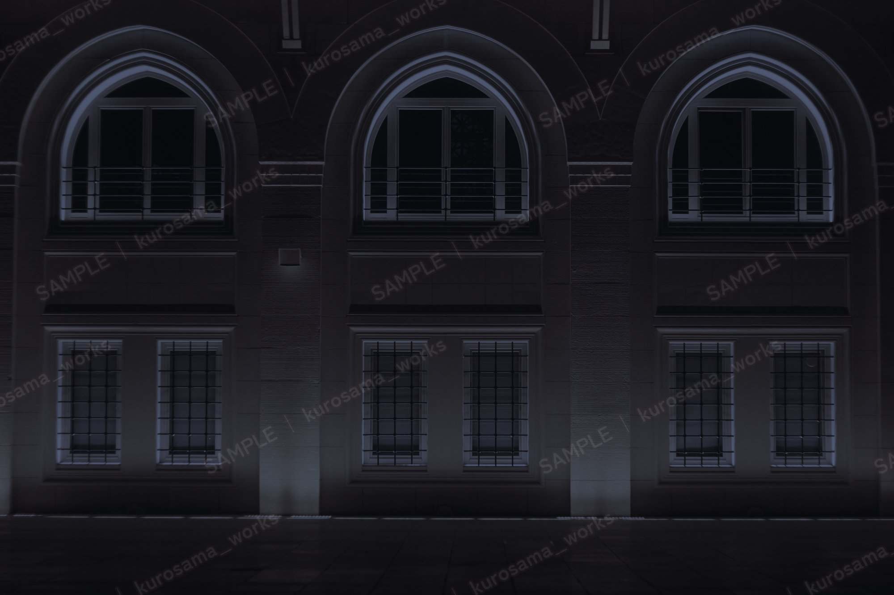
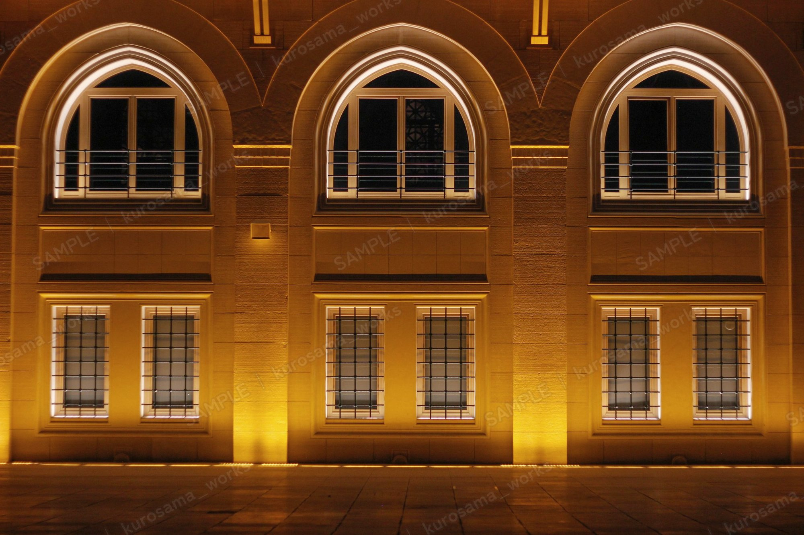
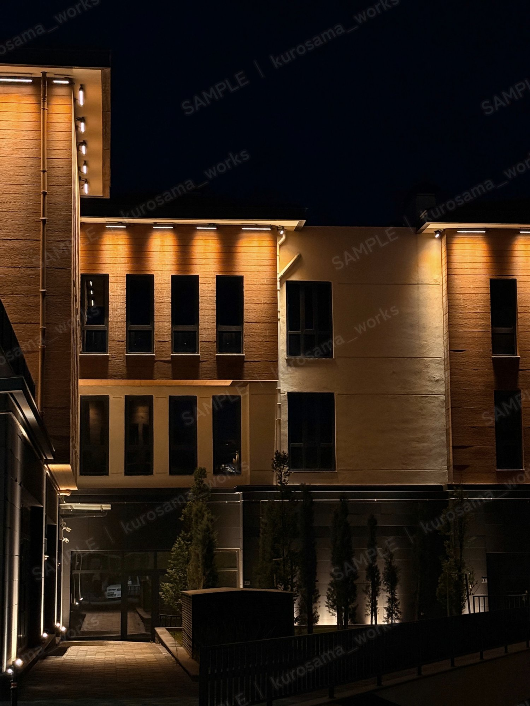
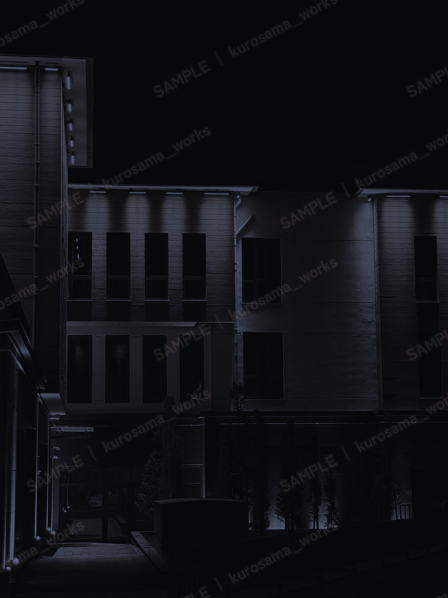
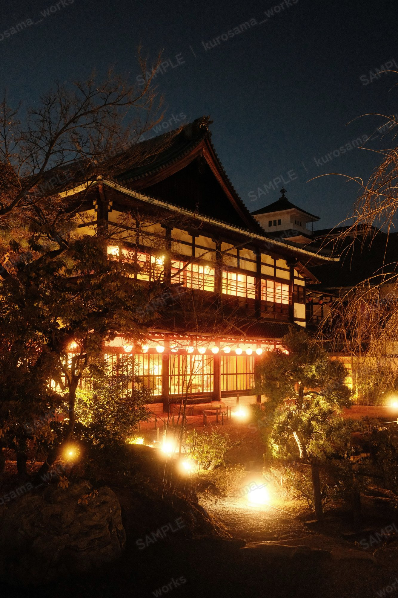
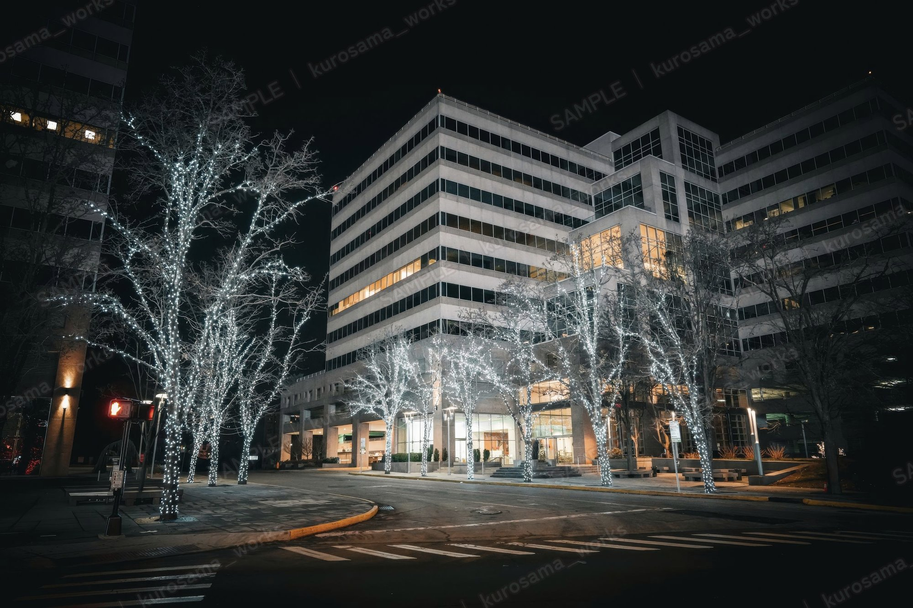
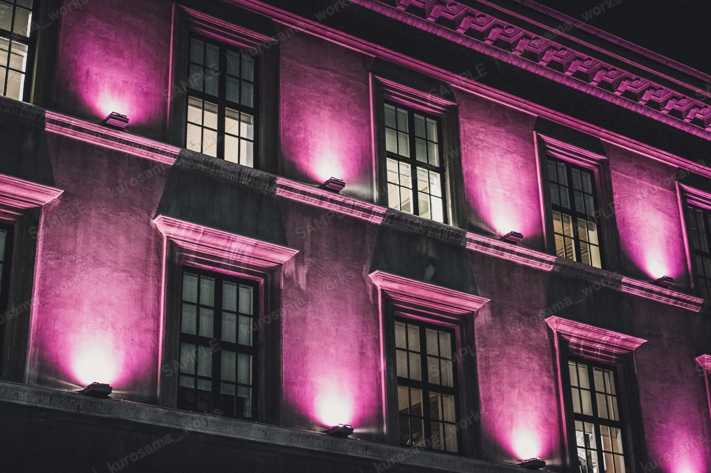
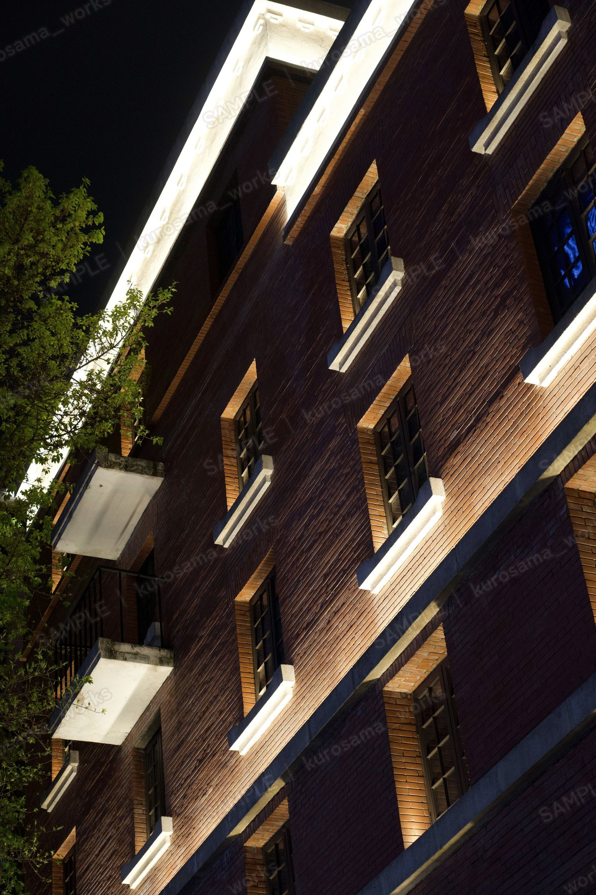
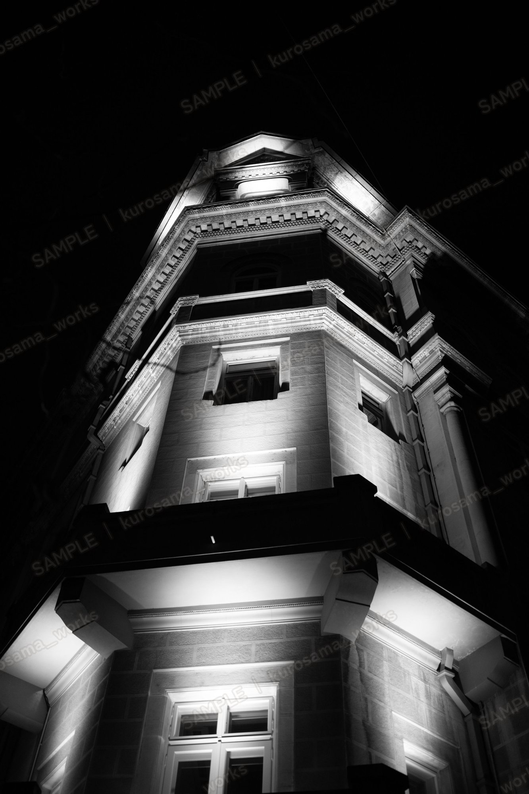

18:42点灯
商業施設・ホテル・旅館・社寺の
外観ライトアップ
建物の夜を、
看板にする。
日が暮れてから、いちばん目立つ建物に。
夜の現地調査から照明計画・電気工事・点灯後の保守まで、まとめてお受けします。
01
施工事例
つまみを左右に動かすと、点灯前と点灯後を見比べられます。


ホテル｜外壁
石の外壁に、
上向きの光を沿わせる。
夜になると周りのビルに埋もれていたホテル。外壁の目地に沿って細い光を当て、通りの向こうからでも入口が分かるようにしました。光の色は石に合わせた電球色です。
- 場所
- 神奈川県
- 器具
- 18灯
- 工期
- 3日
- 点灯
- 日没〜24:00



※写真はイメージです。見本のため、事例の内容は架空です。

02
調査から保守まで、
一社でやります。
-
一
夜の現地調査
日が暮れてから伺い、外壁の素材、周りの明るさ、どこから見られる建物かを確かめます。照度計で今の明るさも測ります。
-
二
照明計画と点灯イメージ
器具の位置と光の向きを決め、点灯後の写真イメージでご確認いただきます。近隣への光の漏れや、まぶしさも計画の段階で見ます。
-
三
電気工事・点灯後の保守
電気工事まで自社で行います。点灯時間のタイマー、季節やイベントでの色替え、器具の交換もお任せください。
03
費用の目安
建物の大きさと器具の数で変わります。現地調査のあと、正式なお見積りを出します。
| 店舗・小さな建物の正面 | 間口10mまで・器具6〜8灯 | 15万円〜 |
|---|---|---|
| ホテル・旅館の外観と庭 | 器具20〜40灯・タイマー込み | 60万円〜 |
| 季節のライトアップ | 設置〜撤去まで・器具はレンタル | 30万円〜 |
| 年間の保守 | 点検年2回・球切れ交換 | 4.8万円／年〜 |
- 1お問い合わせ
- 2夜の現地調査
- 3照明計画・お見積り
- 4施工（2〜5日）
- 5点灯・保守

04
一度、夜の建物を
見せてください。
「どれくらい明るくなるのか」「電気代はいくらか」など、調査の前のご質問だけでもかまいません。建物の写真を送っていただければ、おおよその費用をお返しします。
お電話 03-0000-0000 平日 10:00〜19:00